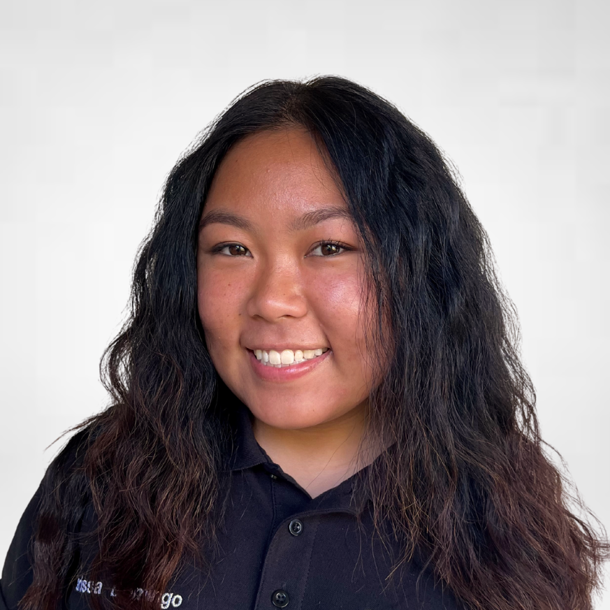

larissandomingo@gmail.com | LinkedIn | Brea, CA
Hello, welcome to my website! I'm Larissa, a Computer Information Systems and Marketing student at Cal Poly Pomona with a passion for data and marketing. I love the satisfaction of analyzing datasets, visualizing insights, and providing resourceful recommendations that can benefit others. My brain is constantly wired, wondering how companies utilize their data and how it could be leveraged to increase sales.
Studying marketing has given me a unique perspective that most CIS students don't have. By constantly utilizing both my left and right brain, I blend creativity with logic, enabling me to come up with unique questions and spot trends. I am curious, organized, detail-oriented, and a team player.
Away from the computer, I ironically LOVE being outside. I enjoy concerts, hiking, traveling, eating, and going on adventures! I live life with a "why not?" mindset, which leads me to some fun memories.
Bachelor of Science in Business Administration, Double Concentration in Computer Information Systems and Marketing
Expected Graduation: Fall 2024
GPA: 3.6
General Education
Graduated: June 2020
GPA: 4.0
Co-led the social media campaign for ASI’s annual BroncoFusion event, significantly increasing student engagement. Developed a detailed content calendar and collaborated with a music agency to generate innovative ideas, enhancing the campaign's reach. Created and shared short-form videos that boosted viewership by 300%, reaching over 40,000 views compared to the usual 10,000. Actively participated in multi-weekly meetings with staff and external partners to ensure smooth coordination. Managed direct messages, maintaining a 100% response rate, which contributed to a sold-out event with 5,000 attendees. These efforts solidified BroncoFusion as one of the most successful events of the year.
Check out a recap of the BroncoFusion event here!
Created a structured board on Monday.com to streamline the team’s efficiency in managing social media content across various platforms. The board included automated reminders for upcoming Hootsuite and publishing deadlines, ensuring timely and organized content delivery. Developed three separate calendars for different social media accounts, providing clear tracking of account details by department. Additionally, set up a dashboard that visualized important statistics, enabling supervisors and team members to monitor progress and performance metrics easily. This initiative significantly improved the workflow and readability of the content management process.
Learn more about Monday.com here!
As part of a team, I conducted an analysis of power outages resulting from intentional attacks, developing a logistic regression model using Python. An interactive Tableau dashboard was created to visualize data on the seasons, months, and days most susceptible to such attacks. Additionally, I prepared multiple weekly presentations to update the team on key findings. Our insights were presented to Southern California Edison, who took the recommendations to heart, highlighting the importance of data-driven decision-making in addressing vulnerabilities within public utilities.
Learn more about this project here!
Conducted a comprehensive analysis aimed at understanding music artist trends, chart performance, release timings, and key characteristics of successful music. Catered to record labels and independent artists by meticulously sifting through data using SQL and Excel. The analysis provided insights into prevailing industry trends and made recommendations on essential features that should be incorporated into music, drawing from the successes of previous chart-topping songs. This project helped inform artists and producers about what makes a song commercially successful in the current music landscape.
Learn more about this project here!
Provided marketing recommendations and presentations for a master’s program at CPP, focusing on enhancing program visibility and student engagement. Conducted research to identify effective marketing strategies and presented findings to the master's program and students. I visited the facilities in person to gain insights and created mock marketing designs and mottos to enhance the program's appeal. The project aimed to elevate the program's reputation and attract more students by leveraging social media and other marketing channels. Notably, the program is currently utilizing some of our marketing suggestions, reflecting their effectiveness.
Learn more about this project here!
Conducted a large-scale market research study exploring public opinions on fast fashion and consumer behavior regarding shopping preferences. Manually collected over 200 responses to understand consumer motivations and attitudes towards sustainability in fashion. Utilized Qualtrics for data collection, analysis, and visualization of findings. The project culminated in recommendations aimed at guiding brands like SHEIN towards more sustainable practices based on consumer feedback.
Learn more about this marketing report here!
Attended a competition hosted by Alteryx, where I networked with a panel of current employees and judges from various companies, including Netflix, showcasing skills in data analysis and visualization. Competed against teams from three universities, analyzing a dataset of 504 rows detailing Vegas TripAdvisor hotel reviews, accommodations, and customer experiences. Utilized Alteryx to clean and prepare the data, followed by the creation of insightful visualizations with Tableau. Presented a comprehensive analysis process, findings, and actionable recommendations, contributing to a second-place finish in the competition.
Check out this slide deck from the competition here!
Led a team of four in a timed competition with over 50 students, analyzing more than 16,000 rows of data related to the video game industry. Utilized programming languages such as Python and analytical tools like Excel and Tableau to uncover valuable insights under time constraints. Created a comprehensive presentation that demonstrated knowledge of the subject matter, featuring visualizations from Tableau and a machine learning model developed in Python. Delivered actionable recommendations based on the findings, which contributed to securing first place in the competition.
Check out this slide deck from the competition here!
Feel free to reach out! I'd love to have a conversation. Contact me via email at larissandomingo@gmail.com.
Connect with me on LinkedIn!